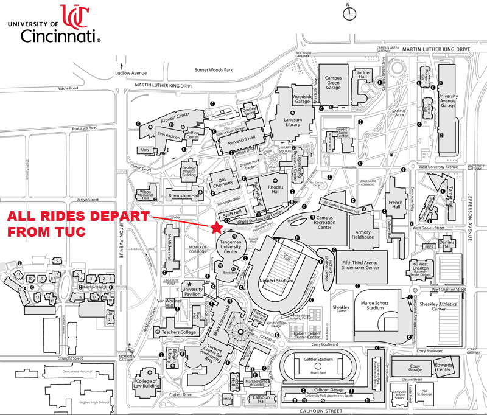

|
EVENTS |
| |
Rides
Come ride with us! We welcome anyone who rides any type of bicycle and shares our passion for two-wheelin'. All rides depart from Tangeman University Center [see map below]. Contact us if you are interested in riding with the team.
To every event you must: Wear a helmet, a UC jersey [if applicable], bring a spare inner tube and proper tools in case of a puncture, bring a front and rear light if darkness is expected to be an issue on the ride.
|
|
Races
The road season consists of collegiate events and USACycling events. MidWest Collegiate Cycling Conference [MWCCC] road events usually begin in March and USAC events continue throughout the spring and summer. Cyclocross and mountain biking season occur in the fall. |
| |
Training
Training is an on-going activity for the UC Cycling Club. For days when riding outside isn't possible, you can find us in Dr. Jayne's lab on our trainers or rollers watching stages of past Tour de Frances. Use of lab equipment, which includes trainers, rollers, PowerTap wheels, and tools, is restricted to active members. The club actively partners with Dr. Jayne in conducting lactate threshold tests in the lab on local athletes as a form of fundraising. These typically occur every other month throughout the year. If you are interested in learning more about training with the club or lactate threshold testing, please contact us. |
| |
|
Membership
An active member participates in at least one group ride per week. Active dues paying members enjoy free race registration, use of club equipment [trainers, rollers, PowerTap wheels] and facilities, discounts on clothing and merchandise, discounted lactate threshold tests, and some free travel/lodging. For more info see our Constitution and By-Laws. Interested in joining? Contact us. |
 |
| |
Forms
Please ensure we have a current Emergency Contact, Concussion Acknowledgement Form, and Release form on record if you are riding with us. They do not take long to fill out and provide us with much needed information. |
| |
|
| |
| -------------------------------------------------------------------------------------------------------------------------------------------------------------------------- |
| The views and opinions expressed within this Web site are strictly those of the page authors. The contents of this page and its subpages have not been reviewed or approved by the University of Cincinnati and the University accepts no responsibility for any of its content. Comments regarding the site (these sites) should be sent to the pages' authors. |
© 2012 |
|